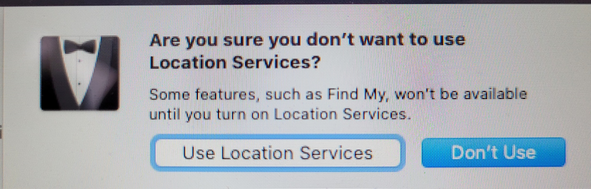

Macbook Enrollment
Step 1: Select your country
Turn on your device Choose a country to set the language and time zone for your Mac.

Step 2: Join a Network
Connect to a Wi-Fi network: Choose the network and enter a password, if necessary. Join a network that has internet access. Location does not matter. If you are on campus, you can connect to:
WiFi Name: HBUHSD-BYOD
WiFi Password: hbuhSD#education!

Step 3: Remote Management
The Device will automatically recognize that the device belongs to HBUHSD. This will get your Macbook setup automatically. Click Continue on the bottom right.

Step 4: Sign into your HBUHSD Google Account
On the Sign in with Google screen, type your HBUHSD Google Account. An example would be jsmith@hbuhsd.edu.

Enter your Gmail Password.
Step 5: Provisioning
Your Macbook will now start configuring everything. Please allow it to grab the Macbook's assigned configuration.

Step 6: Create a Password
You'll be asked to create the name and password of your computer account. You'll need this information to log in to your Mac, change certain settings, and install software.

Step 7: Location Services
Tick the box for Enable Location Services on this Mac. This service is important for use with Siri, Maps, Spotlight suggestions, and more. If you don't want Apple to have access to your location, do not tick this box.
If you do not tick that box, you can confirm by pressing the Don't Use button. 
Step 8: Select your Time Zone
In the Time Zone pane, make sure that ”Set time zone automatically using current location” is selected and your Mac is connected to the Internet. If you want to set the time zone manually, deselect ”Set time zone automatically using current location.” Then click the map to choose a time zone.

Step 9: Finalizing
When the setup assistant finishes setting up your Mac, you'll see the Finder, which includes a menu bar at the top of the screen and the desktop below that.

Step 10: Software Installation
Our HBUHSD software package should automatically start downloading. If you are on a hotspot, it is recommended that you find a different source for internet so you don't use up all of your data. You are now all good to go. You can check by clicking into Applications and checking to see if they appear.
If you see ? icons on your dock, this means that the software has not been installed onto your machine yet. After the software installation gets pushed down and is complete, a restart will fix these ? icons.